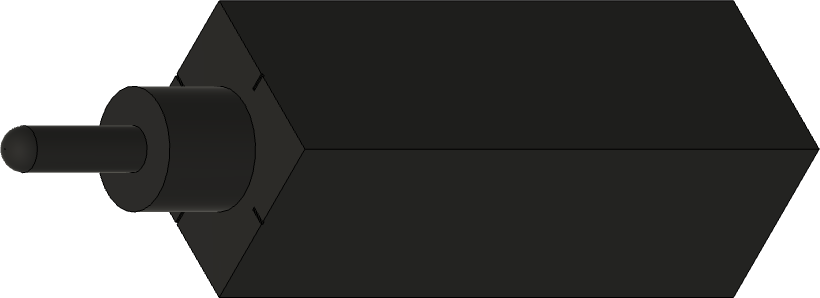
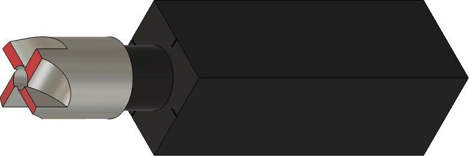

|
|
|
Goniostat |

Figure 1042 in Turning and Mechanical Manipulation Vol. 3
by Charles and John Jacob Holtzapffel
Sharpening certain tools require angles to be cut in ways that can be complex. To do this precisely requires a goniostat.
The original goniostat is shown to the right, and was outlined by Charles Holtzapffel in his 1850 book, Turning and Mechanical Manipulation, Vol. 3 - Abrasive and Other Processes not Accomplished with Cutting Tools. This was designed to work with a flat stone, though now these are used with flat spinning disks, and a newer variation of it is still available.
The version I have made for use on a Tormek is shown below in the section about making one. It gets used for:
If you'd rather make a newer design of the Holtzapffel goniostat, drawings from Mike Fallows are below.
3D-printed Goniostat
This jig is mostly 3D printed.
It requires an SVD-110 as the base on which it slides, and a WM-200 for setting the angle.
The files for making this jig are below:
|

Tool holder for the pen mill reamer |
|

Tool holder holding a pen mill reamer |
Note that there are alignment marks in the top part to help with ensuring the pen mill's cutters are aligned correctly.